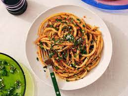

Caramelized Shallot Pasta

Caramelized Shallot Pasta - The Finished Product
Perhaps the only grueling part of making this pasta is slicing so many shallots. But this is what makes the dish so special. They caramelize in a heavy bottomed dutch oven pot, melting into themselves and creating a paste that’s both sweet and earthy. Dak isn’t a huge fan of pasta with heavy anchovy flavor, but this one is incredibly balanced. Just enough to make the sweetness of the shallots tame—gotta have that deep umami flavor. A WHOLE JAR OF TOMATO PASTE? That’s right. Toasted to take way the metallic flavor, the tomato paste adds the acidity that the dish needs. So there you have it. Sweet, umami, acidic perfection, smoothed out with a couple ladles of salty pasta water.
Ingredients
- 1/4 cup olive oil
- 6 large shallots, sliced very thinly
- 4 garlic gloves, finely chopped
- Kosher salt and fresh black pepper
- 1 tsp red-pepper flakes
- 1.2 oz can anchovy fillets (about 12
- 1.6 oz can tomato paste
- 10 oz pasta (or just use the whole box, like we did!)
- Parsley to top (optional)
- Parmasean (optional)
- Flaky salt (optional)
Steps
- Heat olive oil in a large heavy-bottomed Dutch oven over medium high heat. Add shallots and thinly sliced garlic, season with salt and pepper. Cook, stirring occasionally, until the shallots have become totally softened and caramelized with golden-brown fried edges, a solid 15 to 20 minutes. This step takes time but really adds so much depth of flavor to the dish, so don’t skimp out on the time it takes to get a full caramelization!
- Add red-pepper flakes and anchovies drained and straight from the can! No need to chop them as they simply dissolve when they’re cooked. Stir to combine the anchovies with the shallots, about 2 minutes.
- Add tomato paste and season with salt and pepper. Cook, stirring constantly to prevent any scorching, until the tomato paste has started to cook in the oil a bit, caramelizing at the edges, and turning from bright red to a deeper rusty, brick color, about 2 minutes.
- Remove the pot from the heat and transfer about half of the sauce into a jar or some sort of resealable container—save these leftovers for a rainy day or add to eggs, or on top of meat! Leave the remaining paste in the dutch oven.
- Fill another large pot with heavily salted water and bring to a boil- this is for your pasta! When the water starts to boil add your noodles of choice and cook according to the package, preferably al dente. *Save about 2 cups of pasta water when draining* (this is important! Try not to forget!).
- Add the cooked pasta to the dutch oven with the sauce. Slowly begin to pour in the pasta water and toss the pasta to combine with the sauce. Continue adding a little bit of the water at a time to help loosen up the paste and coat all of the noodles. Remember: as the noodles and sauce cool they will begin to get sticky, so add a tiny bit more of the pasta water than you might think you need.
- Plate your pasta and top with parmesan, flaky salt and fresh parsley, if using.